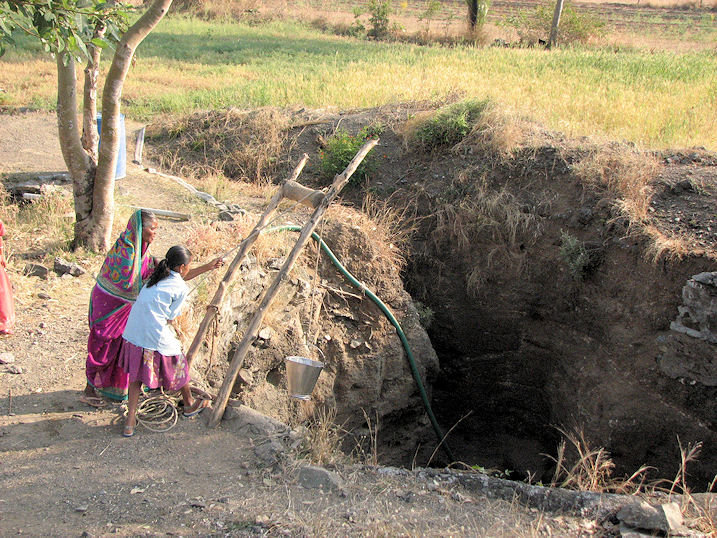
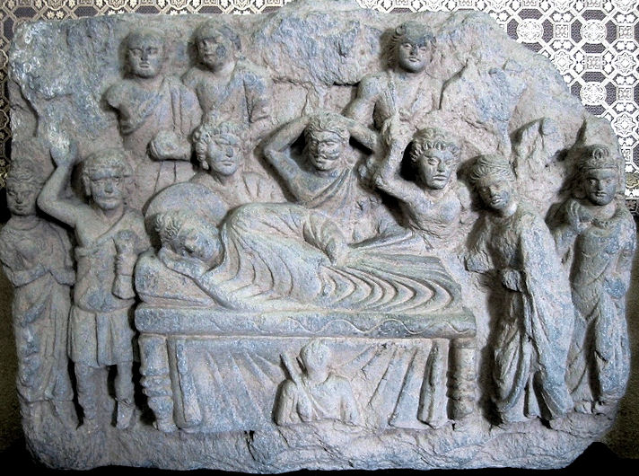
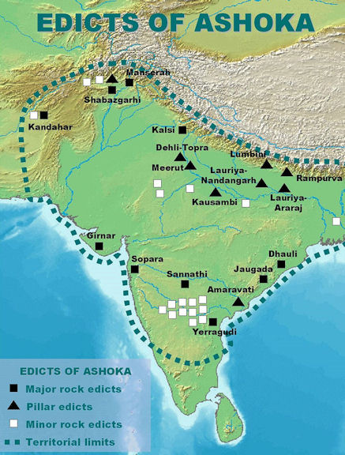

mailto:payer@payer.de
Zitierweise | cite as:
Payer, Alois <1944 - >: Sanskritkurs. -- 38. Lektion 38. -- Fassung vom 2009-01-01. -- URL: http://www.payer.de/sanskritkurs/lektion38.htm
Erstmals hier publiziert: 2009-01-01
Überarbeitungen:
Anlass: Lehrveranstaltungen 1980 - 1984
©opyright: Dieser Text steht der Allgemeinheit zur Verfügung. Eine Verwertung in Publikationen, die über übliche Zitate hinausgeht, bedarf der ausdrücklichen Genehmigung des Verfassers
Dieser Text ist Teil der Abteilung Sanskrit von Tüpfli's Global Village Library
Falls Sie die diakritischen Zeichen nicht dargestellt bekommen, installieren Sie eine Schrift mit Diakritika wie z.B. Tahoma.
Die Devanāgarī-Zeichen sind in Unicode kodiert. Sie benötigen also eine Unicode-Devanāgarī-Schrift.
मनुस्मृति ४.३२ über rechtes Urinieren:
प्रत्यग्नि प्रतिसूर्यं च
प्रतिसोमोदकद्विजम् ।
प्रतिगु प्रतिवातं च
प्रज्ञा नश्यति मेहतः ॥
Erklärungen:
-अग्नि Neutrum Nom.Akk.sg. zu अग्नि m.
-गु Neutrum Nom.Akk.sg. zu गो m.f. "Rind, Kuh"
Abb.: ... प्रज्ञा नश्यति मेहतः
Bangalore = ಬೆಂಗಳೂರು
[Bildquelle: mattlogelin. --
http://www.flickr.com/photos/mattlogelin/105785814/. -- Zugriff am
2008-12-31. --

 Creative
Commons Lizenz (Namensnennung, keine kommerzielle Nutzung)]
Creative
Commons Lizenz (Namensnennung, keine kommerzielle Nutzung)]
| Nasale im Wort werden darauffolgenden Konsonanten
assimiliert, d. h. sie werden durch den diesen Konsonanten
entsprechenden Nasal ersetzt. Nach c- und j- wird -n- durch -ñ- ersetzt. |
| Nomina auf -an sowie Nomina -man bzw. -van nach Vokal
haben drei Stämme: |
||||
| Starker Stamm | -ān | -mān | -vān | Nom., Akk., Vok. sg. m. f. Nom., Akk., Vok. dual m. f. Nom., Vok. pl. m. f. Nom., Akk. pl. n. |
| Mittlerer Schwacher Stamm | -a aus -*n |
-ma aus -*mn |
-va aus -*vn |
Übrige Kasus vor konsonantisch
anlautender Endung Wahlweise auch Lok. sg. m. n. f. |
| Schwächster Stamm | -n | -mn | -vn | Übrige Kasus vor vokalisch anlautender Endung |
Die Endungen sind regelmäßig. Der Nominativ Singular m. f. wird ohne auslautendes -n gebildet- |
||||
Beispiele:
राजन् m. "König"
सीमन् f. "Grenze"
नामन् n. "Name"
| राजन् | सीमन् | नामन् | |
|
एकवचनम् |
|||
| प्रथमा | राजा | सीमा | नाम |
| द्वितिया | राजानम् | सीमानम् | नाम |
| तृतीया | राज्ञा | सीम्ना | नाम्ना |
| चतुर्थी | राज्ञे | सीम्ने | नाम्ने |
| पञ्चमी | राज्ञस् | सीम्नस् | नाम्नस् |
| षष्ठी | राज्ञस् | सीम्नस् | नाम्नस् |
| सप्तमी | राज्ञि राजनि |
सीम्नि सीमनि |
नाम्नि नामनि |
|
बहुवचनम् |
|||
| प्रथमा | राजानस् | सीमानस् | नामानि |
| द्वितीया | राज्ञस् | सीम्नस् | नामानि |
| तृतीया | राजभिस् | सीम्नभिस् | नामभिस् |
| चतुर्थी | राजभ्यस् | सीम्नभ्यस् | नामभ्यस् |
| पञ्चमी | राजभ्यस् | सीम्नभ्यस् | नामभ्यस् |
| षष्ठी | राज्ञाम् | सीम्नाम् | नाम्नाम् |
| सप्तमी | राजसु | सीमसु | नामसु |
Abb.: सीमा
Grenzübergang zwischen Indien und Pakistan in Wagah (वाघा /
واہگہ / ਵਾਘਾ)
[Bildquelle: Vandelizer. --
http://www.flickr.com/photos/jeremy_vandel/99163975/. -- Zugriff am
2008-12-31. --


 Creative
Commons lizenz (Namensnennung, keine kommerzielle Nutzung, share alike)]
Creative
Commons lizenz (Namensnennung, keine kommerzielle Nutzung, share alike)]
Sonst Bildung wie unter 3.1. |
Beispiele:
आत्मन् n. "Seele"
ब्रह्मन् n.: Absolutes, Veda, Brahman
| आत्मन् | ब्रह्मन् | |
|
एकवचनम् |
||
| प्रथमा | आत्मा | ब्रह्म |
| द्वितिया | आत्मानम् | ब्रह्म |
| तृतीया | आत्मना | ब्रह्मणा |
| चतुर्थी | आत्मने | ब्रह्मण्E |
| पञ्चमी | आत्मनस् | ब्रह्मणस् |
| षष्ठी | आत्मनस् | ब्रह्मणस् |
| सप्तमी | आत्मनि | ब्रह्मणि |
|
बहुवचनम् |
||
| प्रथमा | आत्मानस् | ब्रह्माणि |
| द्वितीया | आत्मनस् | ब्रह्माणी |
| तृतीया | आत्मभिस् | ब्रह्मभिस् |
| चतुर्थी | आत्मभ्यस् | ब्रह्मभ्यस् |
| पञ्चमी | आत्मभ्यस् | ब्रह्मभ्यस् |
| षष्ठी | आत्मनाम् | ब्रह्मणाम् |
| सप्तमी | आत्मसु | ब्रह्मसु |
| Diese Nomina haben
keine
Stammabstufung. Nom.sg.m. und Nom.Akk.pl.n. sind in Analogie zu den -an-Stämmen gebildet (Dehnung des -i-), ebenso der Stamm auf -i- vor konsonantischer Endung. Das Femininum wird mit dem Suffix -ī gebildet: z.B. बलिनी |
Beispiel:
बलिन् m.n. "stark, kräftig (durch besonderes बल gekennzeichnet, बल besitzend)"
| पुंस् | नपुंसकम् | |
|
एकवचनम् |
||
| प्रथमा | बली | बलि |
| द्वितिया | बलिनम् | बलि |
| तृतीया | बलिना | |
| चतुर्थी | बलिने | |
| पञ्चमी | बलिनस् | |
| षष्ठी | बलिनस् | |
| सप्तमी | बलिनि | |
|
बहुवचनम् |
||
| प्रथमा | बलिनस् | बलीनि |
| द्वितीया | बलिनस् | बलीनि |
| तृतीया | बलिभिस् | |
| चतुर्थी | बलिभ्यस् | |
| पञ्चमी | बलिभ्यस् | |
| षष्ठी | बलिनाम् | |
| सप्तमी | बलिषु | |
| Mit dem (sehr wichtigen!) तद्धित-Suffix -in werden aus
Substantiven Adjektive gebildet in der Bedeutung: gekennzeichnet durch, besitzend Ursprünglich unterschied sich die Bildung mit dem Suffix -इन् von der mit -मन्त्/-वन्त् dadurch, dass -इन् die Kennzeichnung durch etas Besonderes bezeichnete, während -मन्त्/-वन्त् den Besitz von, die Kennzeichnung durch etwas ausdrückte, das gewöhnlich, allgemein ist. |
Beispiel:
हस्तिन् m.: der durch eine besondere Hand gekennzeichnete = der Elefant (seine Hand ist ja keine gewöhnliche Hand, sondern ein Rüssel)
Abb.: हस्ती
Nagarhole National Park = ನಾಗರಹೊಳೆ ರಾಷ್ಟ್ರೀಯ ಉದ್ಯಾನವನ
[Bildquelle: gopalarathnam_v. --
http://www.flickr.com/photos/gopalarathnam_v/3040514203/. -- Zugriff am
2009-01-01. --


 Creative
Commons lizenz (Namensnennung, keine kommerzielle Nutzung, share alike)]
Creative
Commons lizenz (Namensnennung, keine kommerzielle Nutzung, share alike)]
हस्तवन्त् : einer, der (menschliche) Hände hat
Abb.: हस्तवान्
जयपुर
[Bildquelle: brewingluminous. --
http://www.flickr.com/photos/brewingluminous/958598614/. -- Zugriff am
2009-01-01. --


 Creative
Commons Lizenz (Namensnennung, keine kommerzielle Nutzung, keine Bearbeitung)]
Creative
Commons Lizenz (Namensnennung, keine kommerzielle Nutzung, keine Bearbeitung)]
| Adjektive auf -इन् werden gerne zu Komposita gebildet. |
Beispiel:
सत्यवादिन् zu सत्यवाद m. "Sprechen der Wahrheit": "jemand, der durch Sprechen der Wahrheit gekennzeichnet ist = einer, der immer die Wahrheit spricht"
| Um auszudrücken "jemand namens N. N.", konstruiert man: N.N. (im Nominativ) नाम Wörtlich: "der Name ist/war N.N". Es handelt sich also um einen zwischengeschobenen Nominalsatz. |
Beispiel:
आसीद्राजा नलो नाम वीरसेनसुतो बली । "Es war einmal ein König namens Nala, der starke Sohn Vīrasenas."
Selbstverständlich kann man dasselbe mit einem बहुव्रीहि ausdrücken:
देवदत्तनामा पुरुषः "ein Mann, dessen Name Devadatta ist"
मदयन्तिकानाम्नी बाला "ein Mädchen, dessen Name Madayantika ist"
Abb.: आसीन्महात्मा गन्धी नाम
1930er Jahre
[Bildquelle: Wikipedia. Public domain]
| आत्मन् maskulinum kann im Singular als rückbezügliches Fürwort (Reflexivpronomen) für alle drei Geschlechter, Zahlen (auch Dual und Plural) und Personen gebraucht werden. |
Beispiele:
आत्मन्येषा दोषं न पश्यति । "Sie sieht keinen Fehler an ihr selbst"
आत्मानं स्तुवन्ति । "Sie rühmen sich selbst"
| Der Genetiv (षष्ठी) आत्मनस् kann deswegen stehen für "mein/dein/sein/... eigenes" |
Beispiel:
आत्मनो गृहं प्रविशति । "Er betritt sein eigenes Haus."
| Stämme, die auf einen Konsonanten enden, erscheinen als Vorderglied eines Kompositums in dem (schachen) Stamm, den sie vor der Endung -su des Lokativ (सप्तमी) Plural annehmen. |
Beispiel:
राजपुत्र "Königssohn"
| Als Hinterglied eines बहुव्रीहि kann ein -an-Stamm für alle drei Geschlechter verwendet werden. In der Regel wird aber das Femininum mit dem Suffix -ī vom schwächsten Maskulinstamm gebildet. |
Beispiel:
दुर्णाम्नी "eine, deren Name böse ist ; Krankheitsdämonin"
सूर्य m.: Sonne, Sonnengott Sūrya
Abb.: सूर्यः
सूर्य मंदिर, Konark = कोनार्क
[Bildquelle: PriyadarshiC. --
http://www.flickr.com/photos/2kool/421985480/.
-- Zugriff am 2008-12-31. --

 Creative
Commons Lizenz (Namensnennung, keine kommerzielle Nutzung)]
Creative
Commons Lizenz (Namensnennung, keine kommerzielle Nutzung)]
उदक n.: Wasser

Abb.: उदकम्
Darewadi village, Ahmed Nagar District = अहमदनगर,
महाराष्ट्र
[Bildquelle: Robin Murphy, World Resources Institute. --
http://www.flickr.com/photos/worldresourcesinstitute/2555779241/. -- Zugriff
am 2009-01-01. --


 Creative
Commons lizenz (Namensnennung, keine kommerzielle Nutzung, share alike)]
Creative
Commons lizenz (Namensnennung, keine kommerzielle Nutzung, share alike)]
वा 2P वाति : wehen, blasen
Fut. वास्यति
Perf. IV ववौ
Pass. वायते
Kaus. वापयति
PPP वान । वात
Inf. वातुम्davon:
वात m.: Wind
वा + निस् 2P निर्वाति : wehen, verwehen, erlöschen
davon:
निर्वाण n.: Erlöschen, Nirvana
परिनिर्वाण n.: vollkommenes Erlöschen, vollkommene Erlösung (am Lebensende eines Buddha oder Arhant)

Abb.: गौतमबुद्धस्य महापरिनिर्वाणम्
Gandhara, 2./3. Jhdt. n. Chr.
[Bildquelle: Wikipedia. Public domain]
मिह् 1P मेहति : pinkeln, pissen, ejakulieren
Fut. मेक्ष्यति
Perf. II मिमेह, मिमिहुर्
Pass. मिह्यते
Kaus. मेहयति
PPP मीढdavon:
मेघ m.: Wolke ("Seicher")
सुत m.: Sohn
राजन् m.: König (über das Königtum in Indien siehe Basham, Wonder S. 82 -94). Als Schlussglied eines Kompositums (bes. तत्पुरुष) meist: -राज m. (wie देव)
Feminimum:
राज्ञी f.: Königin, Frau eines Königs
von राज :
राज्य 3: königlich; n. Königreich, Königtum, Herrschaft
नामन् n.: Name
सीमन् f.: Grenze
आत्मन् m.: Selbst, eigene Person, innerstes Wesen. Philosophisch und in Erlösungslehren: das Absolute im Individuum, dessen sich aber das Individuum unter Umständen nicht bewusst ist (v. Stietencron)
ब्रह्मन् n.: das Absolute, der Veda (laut Thieme ursprünglich: die formulierte Wahrheit, davon ब्राह्मण "Wahrheitsformulierer")
ब्रह्मन् m.: der persönlich gedachte Schöpfergott Brahmā
Abb.: ब्रह्मा
Halebidu = ಹಳೆಬೀಡು
[Bildquelle: Wikipedia. GNU FDLicense]
कर्मन् n.: zu कृ 8U: Handlung, Tat, Werk; heiliges Werk, Opferhandlung; Karma: das frühere Tun, das später seine Früchte bringt (z.B. in Wiedergeburt)
कर्मविपाक m.: Reifen der Taten = die guten und bösen Konsequenzen von Taten in früheren Existenzen (zu
वि-पच् )
हस्तिन् m.: Elefant (Elephas maximus)
मनु m.: Mensch, Mann; Name des Vaters des menschengeschlechts (zu मन् 4Ā)
davon:
मनुष्य m.: Mensch
शुच् 1P शोचति : (flammen, leuchten) ; trauern, betrauern
Perf II शुशोच, शुशुचुर्
Fut. शोचिष्यति
Pass. शुच्यते
Kaus. शोचयति
Inf. शुचितुम्
Absol. शोचित्वा । शुचित्वाdavon:
शुचि 3: leuchtend, rein, klar
शोक m.: Trauer, Gram
अशोक 3: frei von Gram; Ashoka-Baum = Saraca asoca (Roxb.) Wilde; Name des Kaisers Aśoka (देवानांप्रिय प्रियदर्शी) (ca. 304 232 v.Chr.)
Abb.: Ashoka-Baum = Saraca asoca (Roxb.) Wilde
Kolkata = কলকাতা
[Bildquelle: J.M.Garg / Wikipedia. GNU FDLicense]

Abb.: Größte Ausdehnung des Reiches Aśokas sowie Fundorte seiner Felsen- und
Säulenedikte
[Bildquelle: Wikipedia.GNU FDLicense]
A) Setzen Sie in folgenden Sätzen die entsprechende Form der Wörter in Klammern ein und übersetzen Sie:
... (सप्तमी विभक्तिः) ... धर्मं रक्षत्यभया जनाः ॥१॥ (राजन्)
आसीद्राजपुत्रो गौतमस् ... सुकृतकर्मोप्पन्नो बुध्या रूप्यमितबलः ॥२॥ (नामन्)
राज्यस्य ... (सप्तमी बहुवचने) ... अरयो राजानं योद्धुं तिष्ठन्ति ॥३॥ (सीमन्)
वैश्यानां कानि ... ॥४॥ (नामन्)
वैश्यास् ... ॥५॥ (किंनामन्)
... (सप्तम्येकवचने) ... अकर्म यः पश्येदकर्मणि च कर्म यः स बुद्धिमान्मनुष्येषु स युक्त इति भगवद्गीतायाम् ॥६॥ (कर्मन्)
किम् ... किमकर्मेति कवयो ऽप्यत्र मोहिताः ॥७॥ (कर्मन्)
ब्रह्मभूतस् ... (प्रथमैकवचने) ... न शोचति न लुभ्यति ॥८॥ (प्रसन्नात्मन्)
... (षष्ठ्येकवचने) ... सुकृतस्य सुफलमाहुः ॥९॥ (कर्मन्)
महीभोगस् ... (शष्ठी बहुवचने) ... धर्मः ॥१०॥ (राजन्)
रज्ञे ... दीयेरन् ॥११॥ (बलिन् हस्तिन्)
... (तृतीया विभक्तिः) ... लोका असृज्यन्त ॥१२॥ (ब्रह्मन् m.)
... (तृतीया विभक्तिः) ... कृतं पापं... (तृतीया विभक्तिः) ... अकृतं पापम् ॥१३॥ (आत्मन्)
सद्भिस् ... जनेभ्यो ऽभयं दीयते ॥१४॥ (राजन्)
... धर्मं न रक्षत्सु सभया जनाः ॥१५॥ (राजन्)
प्राय m.: Hauptsache, Instr. प्रायेण : meist, gewöhnlich (zu प्र-इ)
विनोद m.: Zeitvertreib, Unterhaltung, Vergnügen
Abb.: विनोदः
Carrom-Spiel
[Bildquelle: nicolas - نِيقُولاَوُسَ . --
http://www.flickr.com/photos/keep-on-moving/3007779918/. -- Zugriff am
2009-01-01. --


 Creative
Commons lizenz (Namensnennung, keine kommerzielle Nutzung, share alike)]
Creative
Commons lizenz (Namensnennung, keine kommerzielle Nutzung, share alike)]
अट् 1P अटति : herumschweifen
Perf. I आट, आटुः
Fut. अटिष्यति
Kaus. आटयति
गाध 3: seicht
तॄ 1P तरति : überqueren, sich retten vor (Akk.)
Perf. IIIb ततार, तेरुः
Fut. तरिष्यति । तरीष्यति
Pass. तीर्यते
Kaus. टारयति
PPP तीर्ण
Inf. तरितुम् । तरीतुम्
पार n.(m.): jenseitiges Ufer, Grenze, Ziel
तीर n.: Ufer
Abb.: वाराणस्यां गङ्गातीरे
[Bildquelle: nassio. --
http://www.flickr.com/photos/26116629@N04/2450959377/. -- Zugriff am
2009-01-01. --

 Creative
Commons Lizenz (Namensnennung, keine kommerzielle Nutzung)]
Creative
Commons Lizenz (Namensnennung, keine kommerzielle Nutzung)]
एकैकशस् Adv.: je einzeln
गण् 10P गणयति : zählen
Perf. गणयां चकार
Fut. गणयिष्यति
Pass. गण्यते
PPP गणित
Absol. -गणय्य
Inf. गणयितुम्
Abb.: गणयां चक्रुः
करणी माता मंदिर,
देशनोके
[Bildquelle: neilhinchley. --
http://www.flickr.com/photos/neilhinchley/50518886/. -- Zugriff am
2009-01-01. --


 Creative
Commons Lizenz (Namensnennung, keine kommerzielle Nutzung, keine Bearbeitung)]
Creative
Commons Lizenz (Namensnennung, keine kommerzielle Nutzung, keine Bearbeitung)]
क्रुश् 1P क्रोशति : schreien, wehklagen
Perf. II चुक्रोश
Fut. क्रोक्ष्यति
Pass. क्रुश्यते
Kaus. क्रोशयति
PPP क्रुष्ट
इदानीम् Adv.: jetzt
नूनम् Adv.: jetzt; also, darum; gewiss, sicherlich
मज्ज् 6P मज्जति : sinken, tauchen
PPP ममज्ज
Fut. मङ्क्ष्यति
Kaus. मज्जयति
PPP मग्न
Absol. मङ्क्त्वा । मक्त्वा
गवेषयति Denominativ: suchen
व्याकुल 3: bestürzt, aufgeregt, verwirrt
कोलाहल m.n.: Geschrei, Lärm
विवेष्टित n.: das Rundherum-Suchen
हस् 1P हसति : lachen
Perf. Vc जहास, जहसुर्
Fut. हसिष्यति
Pass. हस्यते
Kaus. हासयति
PPP हसित
सृ 1P सरति : laufen
Perf. ससार, सस्रुर्
Fut. सरिष्यति
Pass. स्रियते
Kaus. सारयति
PPP सृत
Inf. सर्तुम्
कर्णयति Denominativ: hören (zu कर्ण m. "Ohr")
लज्जा f.: Scham
अधस् Adv.: nach unten
दश मूढाः
मूढानां चेष्टितानि प्रायेण विनोदावहानि । यथा हि -- एकदा दश मूढा देशाटनाय प्रस्थिताः । किञ्चिद्दूरं गतानां तेषामुपस्थिता काचिदगाधा नदी । बाहुभ्यां तरन्तस्ते कथमपि नदीं तीर्त्वा पारं गताः ॥
आसीत्तेषां मध्ये कश्चन वृद्धः । स किं सर्वे तीरमनुप्राप्ता ईति जिज्ञासमानस्तानेकैकशो गणयामास । परं नवैव परिगणितास्तेन । ततः स आक्रोशत् । अहो वयम् दश प्रस्थिताः । इदानीं नवैव स्मः । नूनमस्माकमेको नद्यां निमग्नः । गवेषयत तमिति । ततस्तेषामेकैको ऽपि गणनां चकार । परं नवैव दृश्यन्ते । ततस्तेषां व्याकुलीभूतानां महान्कोलाहलः समजनि । तत्रैव नातिदूरे कस्यचिदृषेराश्रमो ऽवर्तत । तत्र वसन्नृषिस्तेषां विवेष्टितमवलोक्योच्चैर्जहास । तस्य हासशब्दं श्रुत्वा मूढास्तरसा समुपसृत्य हासकारणमपृच्छन् । ऋषिराह । अहो । अनात्मज्ञा यूयम् । युष्माकमेकैको ऽपि नात्मानमगणयत् । तेनायं व्यामोहः संजात इति । तदाकर्ण्य ते मूढाः सलज्जमधोमुखाः प्रययुः ॥ (संस्कृतप्रथमादर्शः)
Erklärungen:
दश Nom.Akk.pl.m.f.n. zu दशन् "zehn"
बाहुभ्याम् Instr.Dat.Abl. Dual zu बाहु m. "Arm"
सर्वे Nom.pl.m. zu सर्व 3 "jeder, alle"
जिज्ञासमान Part.Präs.Ā.Desiderativ zu ज्ञा 9U जिज्ञासते "erkennen wollen, wissen wollen"
नव Nom.Akk.pl.m.f.n. zu नवन् "neun"
ययम् Nom.pl. "wir"
स्मस् 1.pl.Ind.Präs.P zu अस् 2P
गवेषयत 2.pl.Imperativ P
एकैक "jeder einzeln"
समजनि 3.sg.Passiv Aorist zu जन्
तरसा Instr. sg. zu तरस् n. "Energie", adverbial gebraucht: "rasch, mit Gewalt"
यूयम् Nom.pl. "ihr"
युष्माकम् Gen.pl. zu यूयम्
Zu Lektion 39